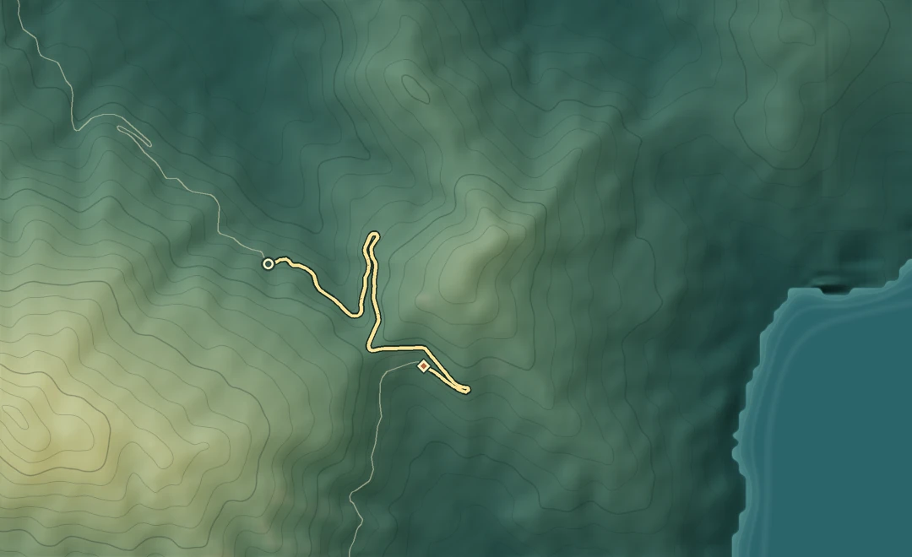

Lăng Cô · Đà Nẵng
Đèo Hải Vân
Đường ôm sườn núi Hải Vân. Qua mỗi mũi núi, một khoảng biển lại hiện ra giữa rừng và chân trời.
Biên dạng dốcChặng trong game
- Chiều dài
- Tổng leo dốc

Lăng Cô · Đà Nẵng
Đường ôm sườn núi Hải Vân. Qua mỗi mũi núi, một khoảng biển lại hiện ra giữa rừng và chân trời.